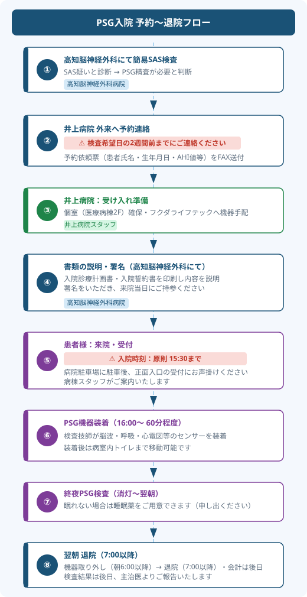

⚠ 予約時の重要事項
- 検査希望日の1週間前までに井上病院へご連絡ください
- 患者様の入院時刻は 原則 16:30 までにお願いします
- 個室（医療病棟2F）を確保するため、事前の病棟調整が必要です
PSG検査入院とは
簡易SAS検査でSAS（睡眠時無呼吸症候群）が疑われた患者様を対象に、終夜睡眠ポリグラフィー（PSG）による精密検査を1泊2日で実施します。
眠っている間の脳波・眼球運動・筋電図・呼吸・心電図・酸素飽和度・体位・脚の動きを同時計測し、無呼吸の重症度・眠りの質・四肢異常運動などを評価します。痛みや電気刺激を伴う検査ではありません。
入院形式
1泊2日
個室（医療病棟 2F）
対象患者
簡易SAS検査でSAS疑い
AHI値などをご提示ください
入院時刻
原則 16:30 まで
食事・入浴を済ませてくれば17:00も可
退院時刻
翌朝 7:00 以降
会計後 8:30〜9:00 以降
予約〜退院フロー

患者様への事前説明事項
📋 入院前の準備
- 服用中のお薬がある場合は医師にご相談のうえ、当日すべて持参してください
- 頭部に脳波電極を装着するため、事前に洗髪・洗顔をお願いします
- 整髪料・化粧・マニキュア・ヒゲは検査前に落としてください
- 付け毛・かつら・アクセサリー類は外してご来院ください
- パジャマ（またはTシャツ）、スリッパ、タオル等をご持参ください
⚠ 検査当日のご注意
- 昼寝をしないようご案内ください
- 検査開始後はカフェインを含む飲料は控え、飲酒禁止です
- 機器装着後は飲み物はストローのみ使用可（食事不可）
- 睡眠薬・抗不安薬を使用中の場合は事前に申告してください
- 消毒綿アレルギーのある方は前もってお知らせください
✅ 検査中の安心ポイント
- センサーを装着したまま寝返りや起き上がりができます
- 病室内のトイレまで自由に移動できます
- 眠れない場合は睡眠薬をご用意できます（申し出ください）
入院時の主な持ち物
| 持ち物 | 備考 |
|---|---|
| 寝衣（パジャマ・Tシャツ等） | ボタンがない方が装着しやすいです |
| タオル・スリッパ | |
| 歯ブラシ・歯磨き粉 | |
| ストロー | 機器装着後の水分補給に必要です |
| 常用薬（全種類） | 睡眠薬・抗不安薬は必ず申告を |
| テレビカード | 1枚 1,000円（1F受付前・2F詰所前で販売） |
| お気に入りの枕（任意） | 普段の睡眠環境に近づけるため |
| シャンプー・ボディソープ（任意） | 院内にもリンスインシャンプー・ボディソープあり |
| 入院同意書（記載済み） | 事前に医事課より送付します |